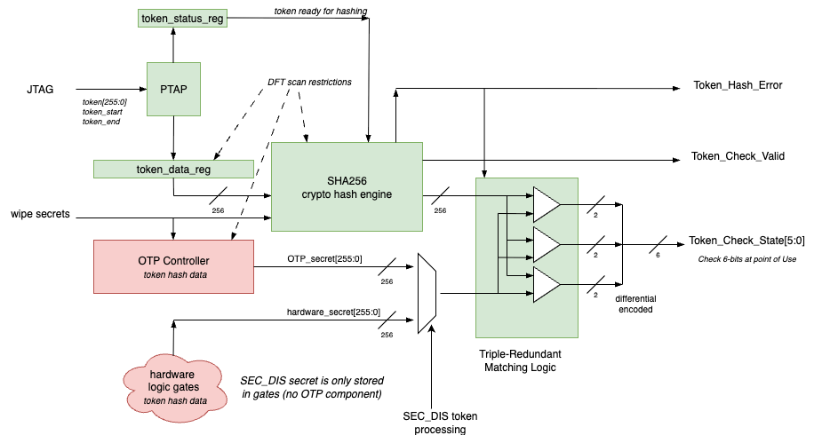

1. Token Processing
Maintaining a known, measurable state of the SEP system is a core requirement to ensure trust and security. Consequently, changing the security state of SEP is a very high security operation that must be protected. Tokens are high security password strings which are used to alter the security state of SEP. They are used to initiate RMA LC state transitions as well as disable security features. Tokens are:
-
Security Disable (SEC_DIS) bypasses fuse sensing
-
Package RMA (RMA_SIP) used in LC state machine
-
Chiplet RMA (RMA_CHIPLET) used in LC state machine
The tokens directly affect the life cycle state machine processing and fuse sensing. so token processing is naturally done in the OTP Controller. Tokens are entered via the JTAG port and captured in a serial register for match processing described in the next section. The serial register has the following important properties:
-
Non-scannable
-
Non-resetable
Token Generation, Storage and Provisioning
All token processing besides final provisioning takes place within the confines of an HSM, a very high security environment. RTL constant tokens are embedded into the design database very late in the development process to ensure minimal exposure while OTP fuse tokens are provisioned at manufacturing test time. All tokens are under tight security control.
Token values are initially generated within the HSM using a secure TRNG, KDF and other facilities. Values to keep track of are the token itself and any encoded value such as the SHA256 hash value of it for example.
All token values are securely stored in the HSM and securely transmitted to the remote tester which programs any OTP fuse values. In the case of SEP tokens, we provision the 256-bit hash digest values into the OTP fuse bank. Values could be global or unique per device. Examples of unique values are the UID, private ECDSA signing keys, and special purpose tokens, granting special TBD privileges on a per device basis. Processing at the device level can handle each scenario.
Token Matching Mechanism and Attack Countermeasures
The tokens are 256-bit values which are processed in an analogous manner as passwords. We have tokens:
-
RMA_SIP_TOKEN
-
LC state
-
Digest RMA_SIP_TOKEN_DIGEST in OTP
-
-
RMA_CHIPLET_TOKEN
-
LC state
-
Digest RMA_CHIPLET_TOKEN_DIGEST in OTP
-
-
SEC_DIS_TOKEN
-
Security disable
-
Digest SEC_DIS_TOKEN_DIGEST in hardware gates (global)
-
The separate security disable token SEC_DIS_TOKEN overrides the entire LC control mechanism; the resulting feature control follows the SEC_DIS / SECURE_TM rules in the Lifecycle Controller chapter. This feature is an emergency fallback intended to enable A0 silicon debugging and shall be permanently disabled in subsequent A1/B0 revisions via metal mask only ECO.
The tokens are not directly compared with an internal value stored in OTP but instead first hashed using the SHA2-256 cryptographic hash algorithm. OTP holds the hash value, also known as the TOKEN_DIGEST. The OTP controller shall have a local, dedicated SHA256 hardware accelerator unit to perform the hashing of the input token, entered via JTAG.
token_match = (SHA256(token[255:0]) == <NAME>_TOKEN_DIGEST[255:0]
The above token matching logic is purely combinational and input values are never stored in any downstream, potentially scannable registers.
The stored secrets are very security sensitive so special care must be taken when provisioning them in the chiplet. OTP_secret[255:0] is a SHA256[token] which is stored in the OTP. The SEC_DIS token is handled differently with its SHA256[token] value stored in hardware gates. (aka RTL secret) rather than in OTP. It is global to all devices by its nature. In both cases, the hash preimage attack to deduce the input token value is considered practically infeasible so even if the secret digest is extracted from OTP or gates, the token will remain unknown to the attacker.
As just stated, the SEC_DIS secret is stored only in gates, not in OTP. The reason for this is that SEC_DIS is an emergency feature used to unlock the chip when the OTP fuse sensing logic is non-functional but we still need to unlock the chip. If we were to rely on the non-functioning OTP, we would be unable to unlock the chip.
The actual matching logic as a vulnerable attack point via FIB or fault injection. We protect this by using triple-redundant matching logic on fully differential signals resulting in a 6-bit output as illustrated below. The SHA256 hashing engine is also protected with redundancy coding of sensitive internal state. Any internally detected errors are signalled on the output error port.
Note that this is not a majority vote scheme i.e. all three comparators must return the same result. If a mismatch is detected, this may indicate a tampering attack and an alarm interrupt must be raised. Furthermore, if an error is detected in the SHA256 hashing engine or the OTP shadow register memory bank, then matching will always return a failure code on all three redundant outputs.

The 6-bit matching signal is distributed as is to each individual point of use i.e. logic where individual features are enabled or disabled. Distributing the final enable logic to each feature diversifies the gate keeping and helps prevent global unlocking.
Match = token_match[5:0] = 6’b010101 Mismatch = 6’b101010 Error = 6’b111111
Post Token Matching Handling
After a token matching operation has completed and a LC state transition operation has been performed, the following takes place:
disable all \{Debug, DFT, Functional} features making system inert if token match successful: initiate OTP LC state update operation
Note that the above procedure takes place regardless whether the token match and LC state transition is successful or not.